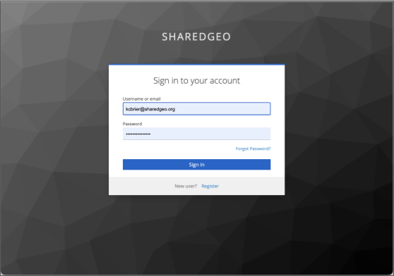
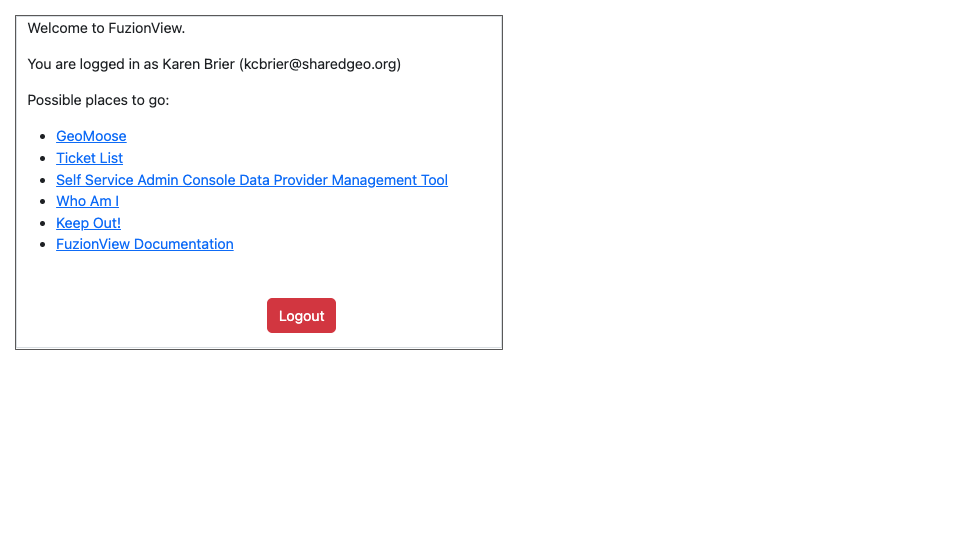
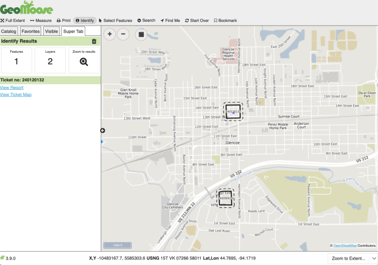
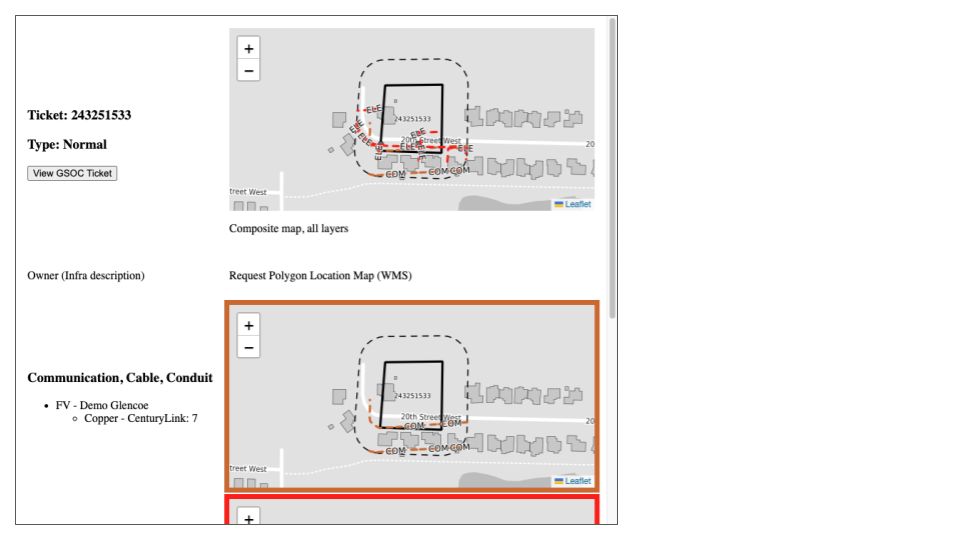
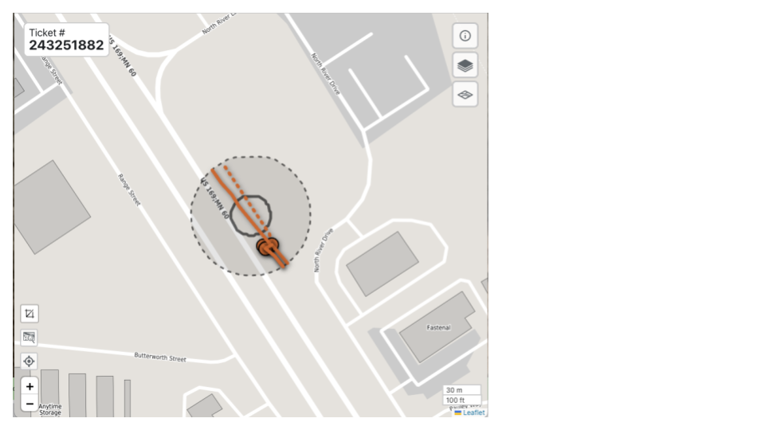
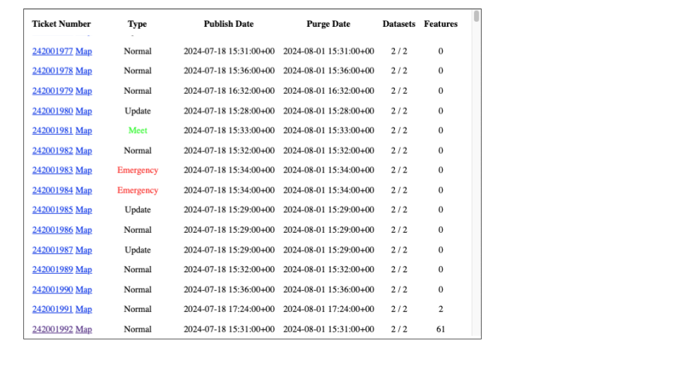
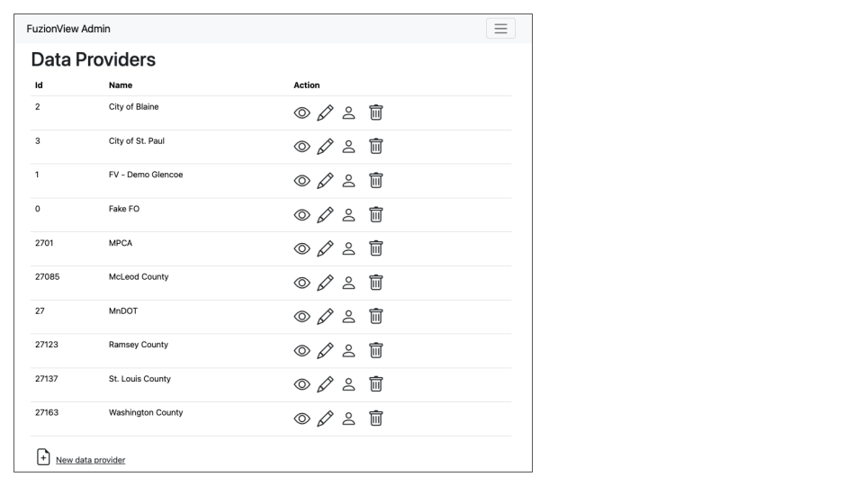
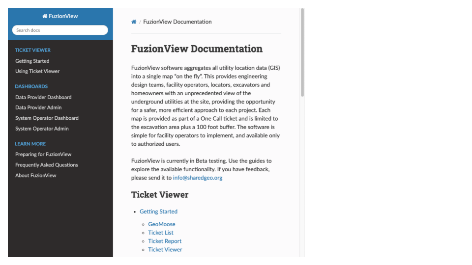

Getting Started
This is a quick overview to get you started using FuzionView.
- There are two ways to see an 811 ticket:
Option 1: Via a link sent to you by your System Operator - just click the link and the ticket will be displayed. For tips on using the Ticket Viewer, checkout this guide
Option 2: Using a login to get to the FuzionView menu. Continue reading to learn about the options on the FuzionView menu.
Please note: FuzionView is an open source product and the login experience may change.
Only authorized users can access FuzionView
To request a FuzionView account, click Register and fill out the form.
FuzionView Account Register Page
Once you have received your user ID and password, login to FuzionView.

FuzionView Login Page
Once you log in, you will see the options you are authorized to access. If you do not see one of the options below, it simply means you don’t have access to that feature.

FuzionView Landing Page
GeoMoose
Depending on your access, some users will be able to use GeoMoose to view all their tickets on a map. For documentation on GeoMoose, please contact info@sharedgeo.org

See all tickets for your organization in a map view
GeoMoose lets you add the Ticket Layer and use Identify to select the ticket you want to open. Once you select the ticket, you have two options.
Ticket Report
The GeoMoose View Report option displays a composite map of all features, plus individual maps of each feature within the ticket boundary.

Map report on the identified features
Ticket Map
The GeoMoose View Ticket Map option opens FuzionView with the selected ticket displayed.

FuzionView ticket map
Ticket List
From the main menu, use the Ticket List option to view all your tickets in a list. This view is for Facility Operators and System Operators that manage multiple tickets.

See a list of all your tickets
From the Ticket List view, select a Ticket Number to open the GeoMoose report view of the ticket.
From the Ticket List view, select the Map option to open the selected ticket in the FuzionView Ticket Viewer.
You will find more detailed documentation on using the Ticket Viewer here
Self Service Admin Console Data Provider Management Tool
This menu option is used by Facility Operators to configure new or existing datasets and by the System Operator to view and manage data from all Facility Operators and other Data Providers.

Displays a list of all Data Providers
Select from the action icons to View or Edit the Data Provider, Manage their Users, or Delete a Data Provider.
You can find more detailed documentation in the Admin tools for Data Providers and tools for System Operators.
Who Am I?
This menu option is helpful when you need support and displays your Name, Email used for registration, and the roles assigned to you. This is also where you’ll find the option to Logout.
FuzionView Documentation
This is a link to all FuzionView documentation.

FuzionView Documentation